Capacidad disponibleGestión de órdenes médicasCiclo completo: solicitud, atención, extensión y egreso
Disponible
Atención primaria controlada de punta a punta
Esta capacidad cubre el ciclo de vida de una Orden Médica: desde la
solicitud y el comprobante, pasando por el ingreso del paciente,
la solicitud y autorización de extensiones, hasta el egreso que cierra
la atención. Prestadores y personal interno operan sobre el mismo
flujo, con consulta, documentos y trazabilidad en cada etapa —
construido con Formas Configurables e integrable al nuevo Portal.
No es un mockup ni un plan a futuro: es una capacidad operativa que
ordena la atención primaria con estatus claros, evidencia documental
y un patrón reutilizable para integrar al Portal unificado en la Fase 1.
Solicitud con comprobante
Asegurado, servicio, proveedor y documentos con número de orden al confirmar.
Atención controlada
Ingreso, extensiones y autorización con historial y estatus por etapa.
Egreso trazable
Cierre de la atención con documentos, resumen y resultado egresado.
Solicitud
Creación de la orden: asegurado, servicio, proveedor, documentos y comprobante
Atención y extensión
Ingreso, días adicionales y autorización según el estatus de la orden
Egreso
Cierre de la atención con documentos, resumen y resultado egresado
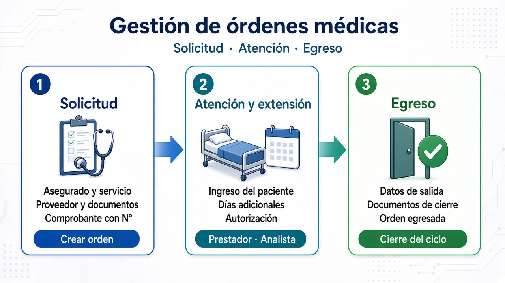
Tres pilares de la capacidad: solicitud, atención y egreso
1 Creación de Orden Médica
Flujo guiado para abrir la solicitud: localizar al asegurado,
capturar el servicio y el motivo, seleccionar proveedor, adjuntar
documentos y confirmar. Al finalizar se entrega el comprobante
con el número de orden — el punto de partida del ciclo de atención.
Búsqueda del aseguradoIdentificación del paciente y contexto de la póliza / cobertura.
Datos del servicioTipo de atención, fechas y parámetros de la solicitud.
Síntoma, motivo y proveedorJustificación clínica y selección del prestador.
Documentos, resumen y comprobanteAdjuntos, confirmación y comprobante con N° de orden.
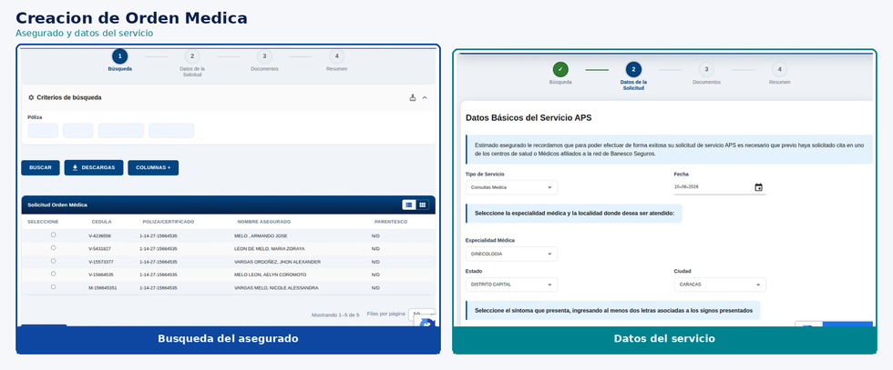
Búsqueda del asegurado y datos de la solicitud
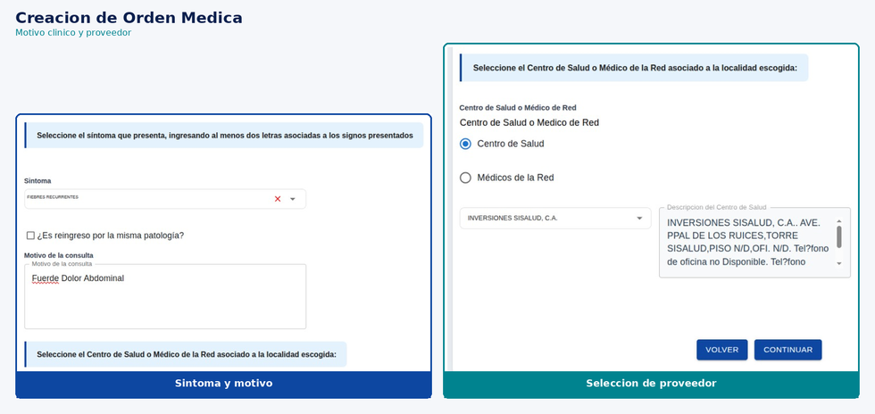
Síntoma / motivo y selección de proveedor
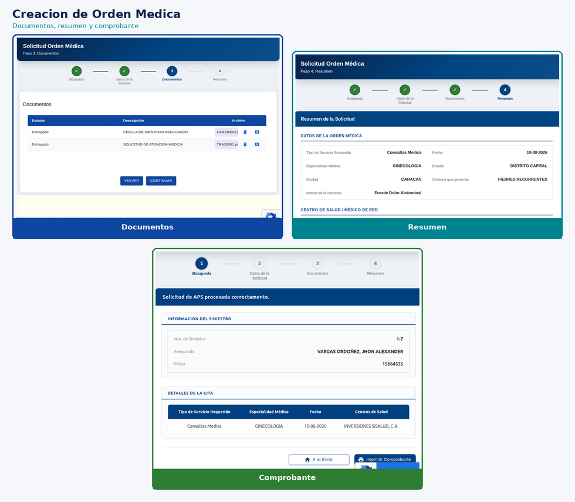
Documentos, resumen y comprobante de la orden
2 Registro de ingreso
El prestador localiza la orden solicitada, procesa el ingreso del
paciente, registra los datos de atención, adjunta documentos y
confirma. La orden pasa a estatus de atención en curso, lista
para extensión o egreso según el caso.
Consulta de órdenesFiltros por período, cédula, N° de orden y estatus.
Procesar ingresoAcción disponible según el estatus de la orden.
Datos y documentosCaptura del ingreso y carga de recaudos asociados.
Resultado en atenciónConfirmación y orden en estatus de atención activa.
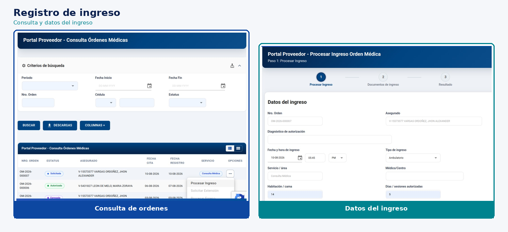
Consulta de órdenes y datos del ingreso
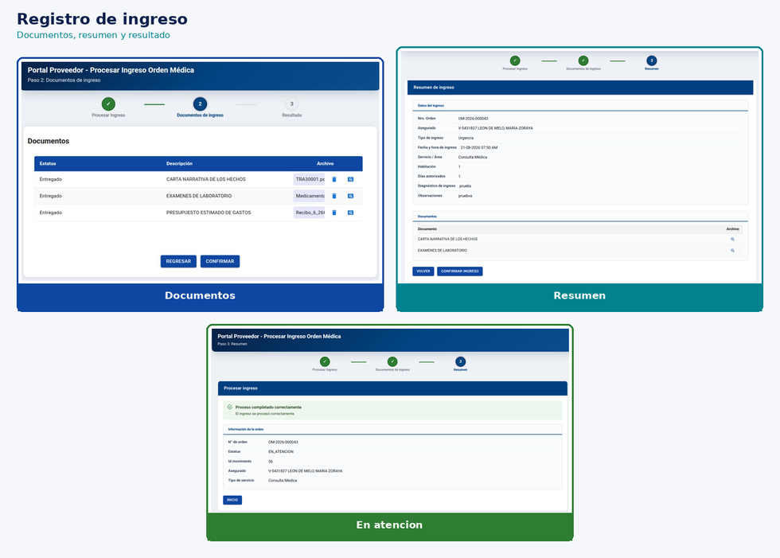
Documentos, resumen y resultado del ingreso
3 Solicitud de extensión
Cuando la atención requiere días adicionales, el prestador solicita
la extensión sobre una orden en atención: justifica, adjunta
documentos y deja la orden pendiente de autorización — sin
interrumpir la trazabilidad del caso.
Órdenes en atenciónLocalización de órdenes elegibles para extensión.
Datos de la extensiónDías adicionales y parámetros de la solicitud.
Justificación y documentosMotivo clínico y recaudos de soporte.
Pendiente de autorizaciónLa orden queda en estatus de extensión pendiente.
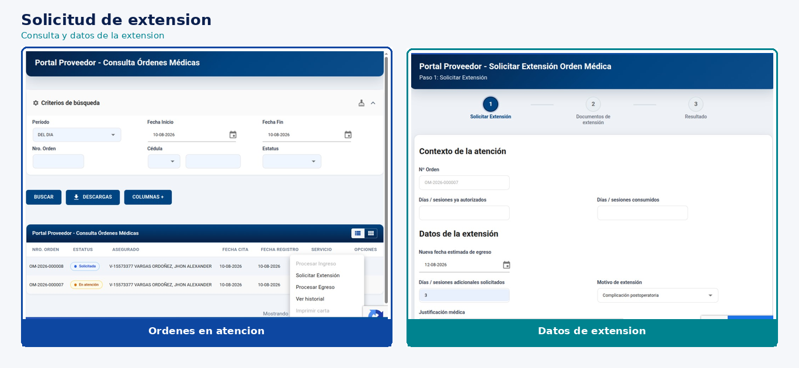
Consulta y datos de la extensión
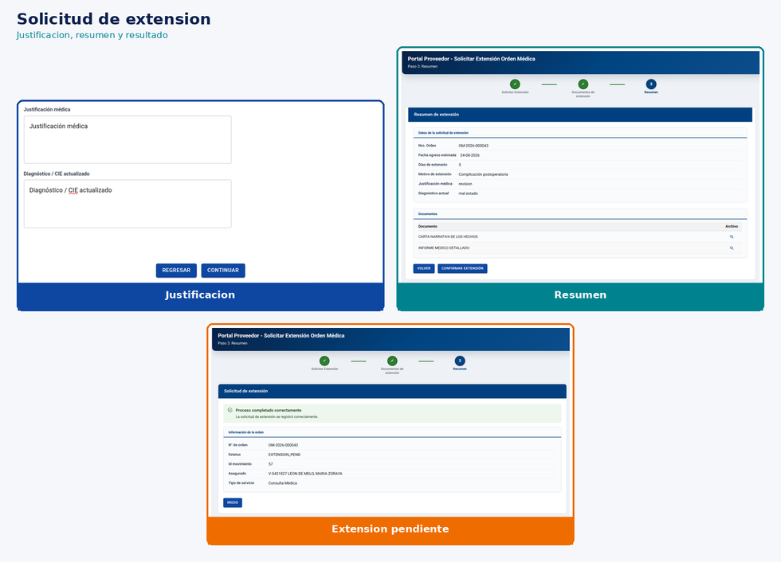
Justificación, resumen y resultado pendiente
4 Autorización de extensión
El analista revisa las órdenes con extensión pendiente, valida el
historial de movimientos, confirma o rechaza y deja la orden
autorizada para continuar la atención. La decisión queda documentada
en el mismo flujo.
Bandeja de pendientesConsulta filtrada por estatus de extensión pendiente.
Autorizar extensiónRevisión de contexto, ingreso y datos de la solicitud.
Historial de movimientosTrazabilidad de la orden para apoyar la decisión.
Resultado autorizadoConfirmación y orden lista para seguir en atención.
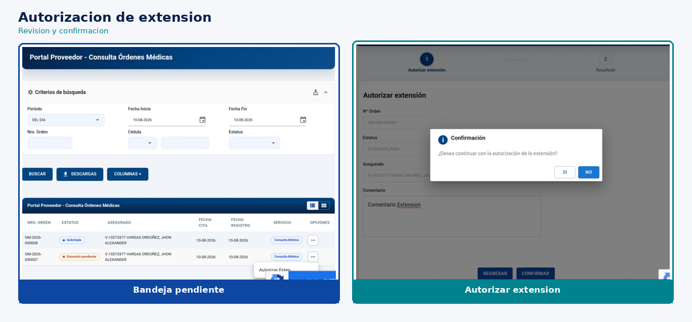
Consulta y autorización de la extensión
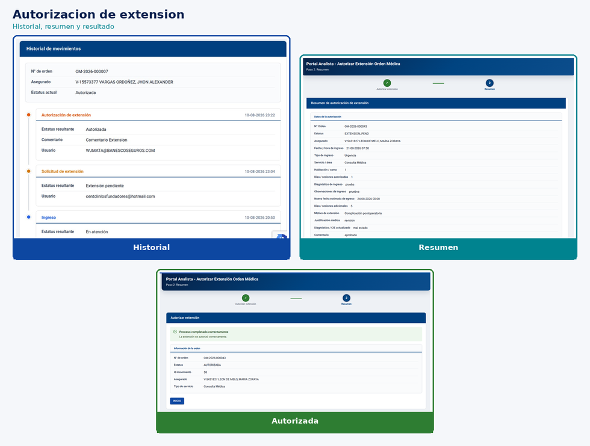
Historial, resumen y resultado autorizado
5 Registro de egreso
Cierre del ciclo: el prestador procesa el egreso, registra los datos
de salida, adjunta documentos y confirma. La orden queda egresada
con trazabilidad completa, lista para consulta operativa y auditoría.
Procesar egresoAcción sobre órdenes en atención listas para cerrar.
Datos del egresoInformación de salida y cierre de la atención.
Documentos de egresoRecaudos asociados al cierre.
Orden egresadaResultado final con estatus de egreso.
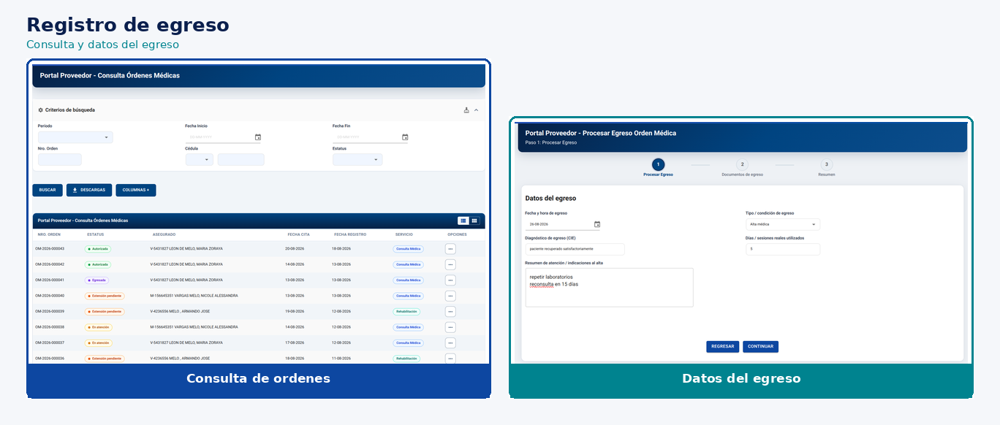
Consulta y datos del egreso
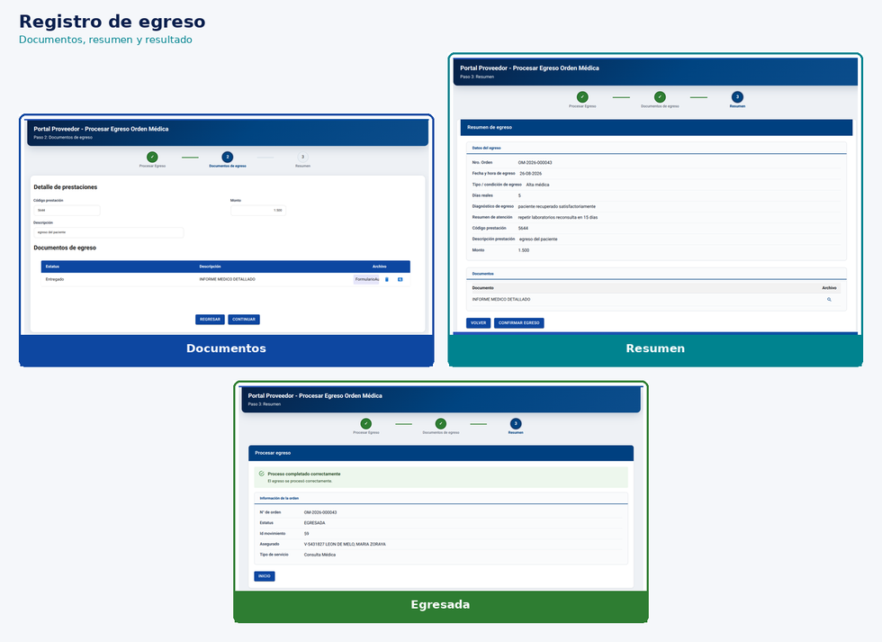
Documentos, resumen y resultado egresado
6 Un ciclo de atención reutilizable
Solicitar, ingresar, extender, autorizar y egresar forman un patrón
claro de negocio para prestadores y operaciones. El mismo modelo
de Formas Configurables sostiene cada etapa y facilita su integración
al Portal unificado.
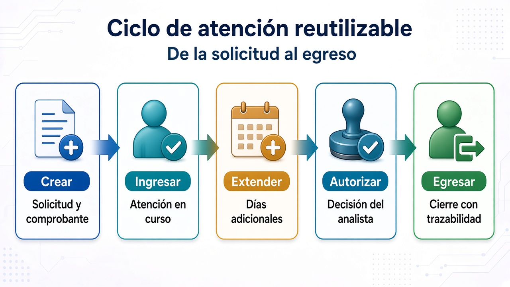
Ciclo de atención reutilizable: de la solicitud al egreso
Crear: solicitud con asegurado, servicio, proveedor y comprobante.
Ingresar: inicio de la atención con datos y documentos.
Extender: días adicionales justificados por el prestador.
Autorizar: decisión del analista con historial y resultado.
Egresar: cierre de la atención con trazabilidad completa.
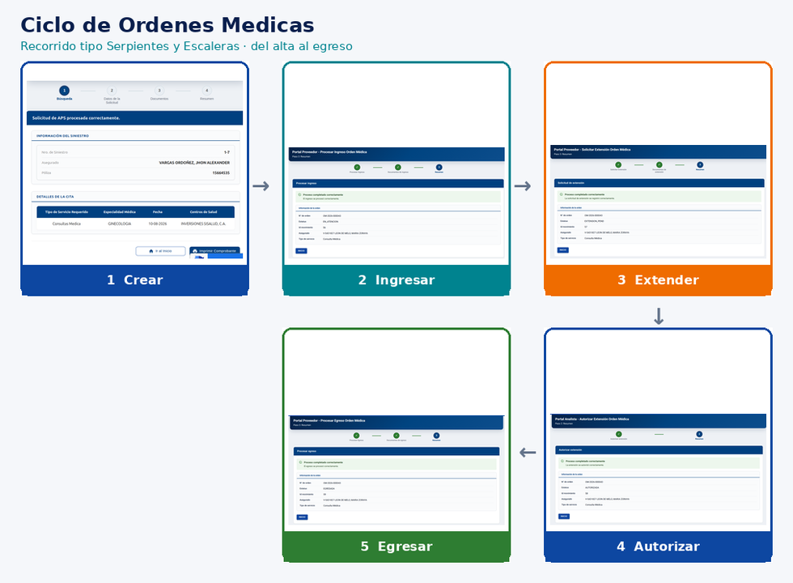
En la práctica: recorrido del ciclo sobre pantallas reales
Mensaje clave: la gestión de Órdenes Médicas ya está
disponible como capacidad de negocio, con ciclo de vida completo y
construida con Formas Configurables. Lista para integrar al nuevo Portal.